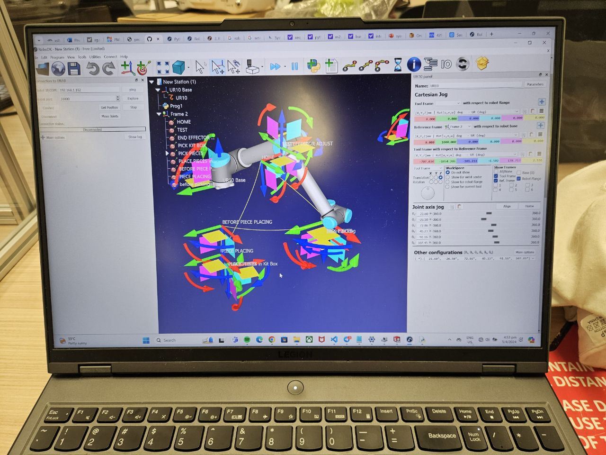
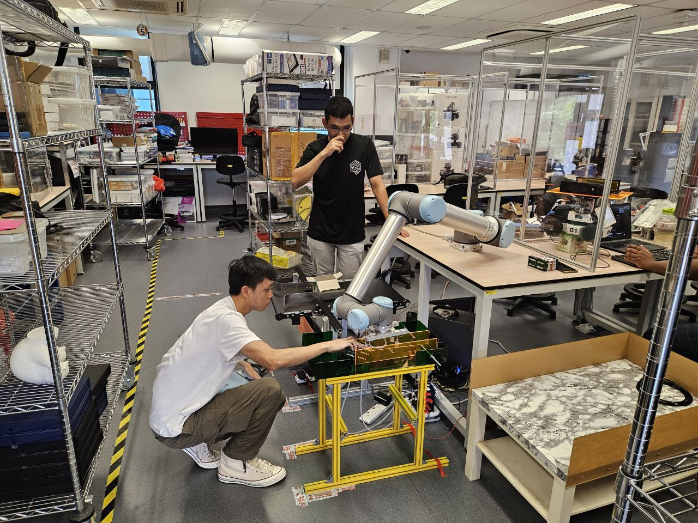
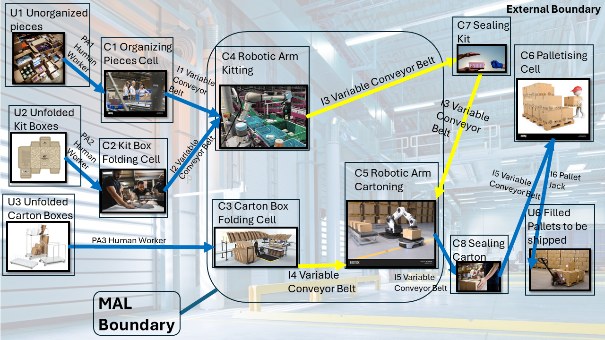
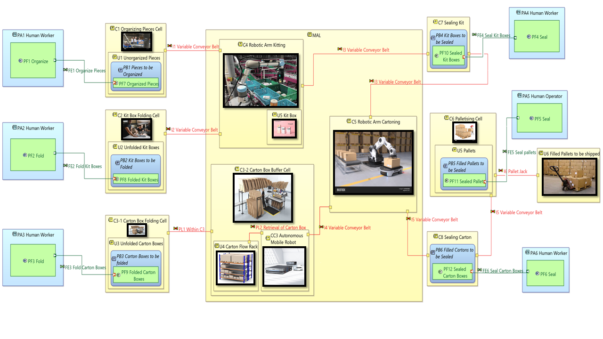
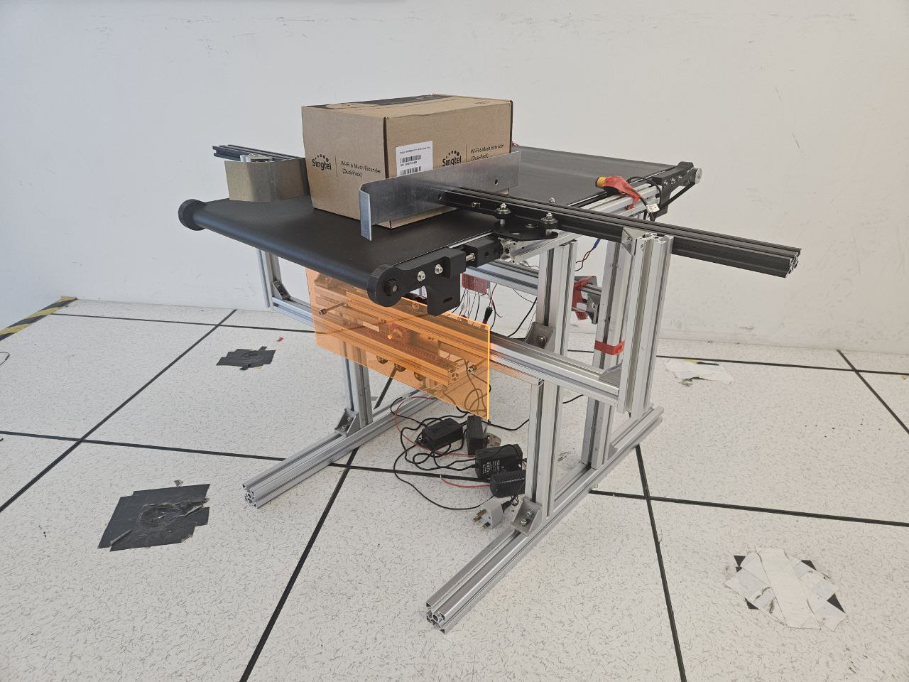

Project 4
Worked with Industrial Partner to tackle Problem Statement: "Simulate assembly line automation. Using robotics and machines, the students can also model out before and after automation to show the productivity improvement and reduction of reliance on human resources."
Displayed proficiency in ROS2 Framework: Control, MoveIt2, and Gazebo.
Showcased independent learning abilities for new technologies and effective problem-solving.
Demonstrated Project Management skills to align the project team within scope at all times, mitigating risks and ensuring timely project deliverables.
Below are the results of the project: From a real-life demonstration video to the previous iterations.
Developed Script in Python language used to configure 6-axis movement of UR10 in roboDK



Applied Arcadia and Capella skills to design solution architectures.

Evolved an electrical conveyor belt into a variable conveyor belt that is capable of handling high-mix low-volume (HMLV).
